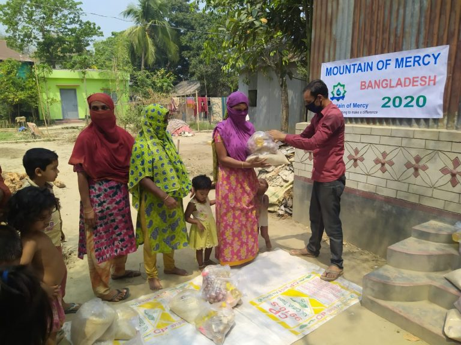
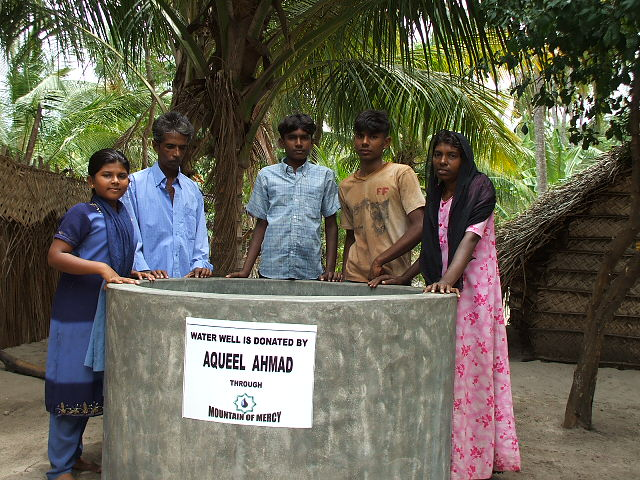

Who We Are
WE GIVE 100% OF YOUR DONATIONS TO THE NEEDY.
____
Mountain of Mercy is a UK based charity providing international aid to several countries world wide. The charity provides support to victims of natural disasters and those that are living below the poverty line in the most vulnerable positions. Our Mission is helping to make a difference in alleviating worldwide poverty, suffering and distress by means of volunteer contribution.
Striving to go above and beyond our slogan ‘Helping to make a difference’, we have had ran numerous projects across the globe. From our recent project of providing food to the needy in Bangladesh during the 2020 Coronavirus crisis, to building homes and water wells across Sri Lanka, we aim to provide help both for today and tomorrow.
📖 Read More
What We Have Done
Just Some Of The Projects We Have Acheived

Bangladesh: COVID-19 Pandemic
PACKS FOR THE UNDERPRIVELLEGED ON LOCKDOWN
Since 2017 Mountain of Mercy has been building wells in rural areas of the Satkhira district. A necessity that many of us take for granted but for millions of people world wide a day to day struggle to find clean drinking water. To date we have built over 200 wells which has benefited a great amount of people.

Sri Lanka Projects
PROVIDING SUPPORT FOR THE MOST VULNERABLE
After the devastation of the Tsunami Disaster in 2004 many families in poor rural villages were left displaced… the homes wrecked, their livelihood (mostly fishing gear) destroyed. Mountain of mercy from 2005 carried out projects that included purchasing of crafted boats/engines/fishing nets and building of homes which now place several poor people into a place to live.
A number of other projects within the region including the building of many water wells as well as a brand-new medical centre.

Your Support Can Change Lives
Helping to build tomorrows communities